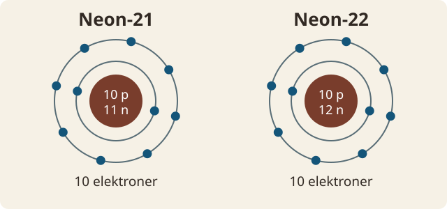

Vetenskaplig briefing · Kemi och fysik
Vad visar Bohrs skalbild av en atom?
En ring med två prickar och en större ring med åtta. Så kan en neonatom ritas. Bilden hjälper oss att räkna elektroner och se hur de är fördelade mellan skal. Men två atomer kan ha precis samma skalbild och ändå väga olika mycket. För att förstå varför behöver vi läsa kärnan och skalen var för sig.
Varför ritar vi ringar?
Led ström genom förtunnad vätgas så kan gasen sända ut ljus. När ljuset delas upp efter våglängd framträder skarpa linjer. Om väteatomerna kunde ge ifrån sig vilken liten mängd energi som helst vore det svårt att förklara varför just vissa färger återkommer. En spektrallinje berättar något bestämt om atomen som sände ut ljuset.
Niels Bohr föreslog att elektronen i väte bara kunde ha vissa energier. I hans modell motsvarade de tillåtna energierna olika banor kring kärnan. När atomen går från en högre energinivå till en lägre kan den sända ut en foton, ett ljuskvantum. Fotonens energi motsvarar skillnaden mellan nivåerna. På så vis kunde modellen förklara våglängderna hos vätets spektrallinjer.
En modern skalbild lånar ringarna men använder dem främst för att ordna och räkna. I en neutral neonatom i grundtillståndet, alltså dess tillstånd med lägst energi, hör två elektroner till det innersta skalet och åtta till nästa. Man kan vrida papperet ett kvarts varv utan att uppgiften om atomen förändras. Prickarnas klockslag på ringarna berättar inget om var en elektron befinner sig just nu.
Vad saknas i bilden?
Tänk dig att du försöker använda pennan för att följa en elektron ett helt varv. Redan där har teckningen lockat dig att ställa en fråga som den inte kan besvara. Bohrs enkla modell fungerar väl för många energiskillnader i väte, som har en enda elektron. I neon påverkar elektronerna även varandra. En ring per skal räcker inte för att beräkna atomens spektrum.
I kvantmekaniken beskriver en orbital ett elektrontillstånd. Med hjälp av orbitalen går det att beräkna sannolikheten att hitta en elektron i olika områden kring kärnan. En bild av ett sådant område och en bild av en bana besvarar alltså olika frågor. Inom ett skal finns en eller flera orbitaler. Skalbilden döljer den finare indelningen, vilket är praktiskt så länge uppgiften är att hålla reda på antalet elektroner.
Vilken uppgift bestämmer grundämnet?
Täck över ringarna och titta på kärnan. Varje proton där har en positiv elementarladdning. Antalet protoner kallas atomnummer och betecknas med Z. Tio protoner betyder neon. Den uppgiften räcker för att välja rätt ruta i periodiska systemet även om du ännu inte har fått veta hur många elektroner eller neutroner som finns.
Varje elektron har lika stor negativ laddning som protonens positiva. En neutral neonatom måste därför ha tio elektroner. Förlorar den en elektron återstår nio, och den sammanlagda laddningen blir en positiv elementarladdning. Det är nu en neonjon. Varken antalet protoner eller antalet neutroner ändrades när elektronen försvann. Ringarnas prickar avslöjar alltså bara grundämnet på egen hand om du också vet vilken laddning partikeln har.
Vad skiljer neon-21 från neon-22?
Neutroner bidrar till kärnans massa men saknar elektrisk laddning. Masstalet, A, räknar protoner och neutroner tillsammans. I namnet neon-21 anger 21 just masstalet. Tio av kärnans partiklar är protoner, så elva måste vara neutroner. I neon-22 är det fortfarande tio protoner, men tolv neutroner. De två varianterna av samma grundämne kallas isotoper.

Lägg skalbilderna för de två neutrala atomerna bredvid varandra. Båda har två elektroner i det första skalet och åtta i det andra när de är i grundtillståndet. Om bilderna saknar uppgift om kärnan kan du inte avgöra vilken som föreställer den tyngre isotopen. Just den begränsningen gör jämförelsen användbar. Isotopnamnet berättar det som ringarna lämnar öppet.
Varför står det ett decimaltal i tabellen?
För neon hittar du ofta värdet 20,18 i periodiska systemet. Det är frestande att avrunda och använda resultatet för att räkna neutroner. Men masstalet tillhör en bestämd kärna och är alltid ett heltal. Den relativa atommassan för ett prov beskriver i stället atomernas genomsnittliga massa jämförd med en tolftedel av massan hos en kol-12-atom. Eftersom det är en kvot har talet ingen enhet.
I jordens atmosfär utgör neon-20 ungefär nio tiondelar av neonatomerna. Merparten av resten är neon-22 och en liten andel är neon-21. Varje isotops uppmätta atommassa bidrar efter hur vanlig isotopen är. Därför hamnar medelvärdet nära massan hos neon-20. Inte ens en ren isotops uppmätta massa behöver bli exakt lika många atommassenheter som dess masstal. Att väga en atom och att räkna partiklarna i kärnan är två olika sätt att undersöka den.
Testa tanken
En neutral neon-22-atom förlorar en elektron. Vilka uppgifter skulle du ändra om du fick rätta både teckningen och etiketten?
Visa svaret
Ta bort en elektronprick och märk ut den positiva laddningen. Behåll namnet neon, atomnumret tio och masstalet 22. Kärnan har fortfarande tio protoner och tolv neutroner. Förändringen syns i elektronskalet, medan isotopnamnet fortfarande beskriver samma kärna.
Källor och vad de tillför
- OpenStax · The Bohr Model. Förklarar sambandet mellan vätets spektrallinjer, fotonernas energi och nivåskillnaderna i Bohrs modell.
- OpenStax · Development of Quantum Theory. Förklarar orbitaler, sannolikhet och skillnaden mellan ett elektrontillstånd och en bestämd bana.
- OpenStax · Atomic Structure and Symbolism. Definierar atomnummer, masstal och joner och visar hur isotopernas massor vägs samman.
- IUPAC:s isotopkommission · Neon. Ger de uppmätta isotopmassorna, andelarna och det rekommenderade värdet för atmosfäriskt neon. Isotopblandningen kan vara annorlunda i andra prov.